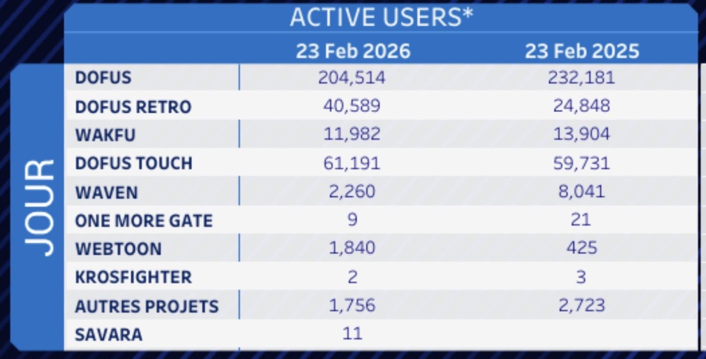
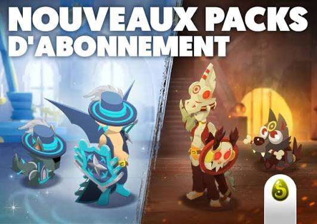

economie
Chiffre d’affaires

Ankama gagne principalement de l’argent grâce à ses jeux vidéo, notamment Dofus et Wakfu. Les jeux vidéo représentent une grande partie de l’activité économique de l’entreprise.
Abonnements et achats

Les joueurs peuvent payer un abonnement et acheter certains contenus dans les jeux. Ces paiements permettent à Ankama d’obtenir des revenus réguliers.
Emplois
Ankama crée des emplois dans plusieurs domaines : développement, graphisme, animation, marketing et édition. L’entreprise participe ainsi à l’activité économique du secteur du jeu vidéo.
Diversification

Ankama gagne aussi de l’argent grâce aux mangas, aux séries d’animation et aux produits dérivés. Cette diversification permet à l’entreprise d’avoir plusieurs sources de revenus.
Investissements
Une partie des revenus peut être réinvestie dans de nouveaux jeux et de nouveaux projets. Ces investissements permettent à Ankama de développer ses activités et ses licences.